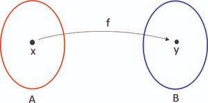
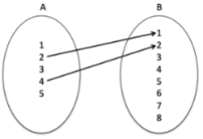
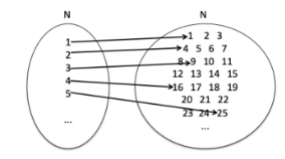
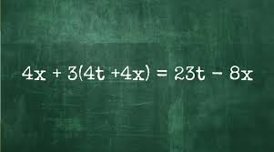
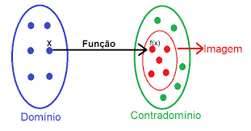

Introdução às funções
Definição de funções:
Em matemática, uma função é uma relação entre um conjunto de entrada (domínio) e um conjunto de saída (contradomínio) que associa cada elemento do domínio a um único elemento do contradomínio. Em outras palavras, uma função é uma correspondência que atribui a cada valor de entrada exatamente um valor de saída. Formalmente, uma função f de um conjunto A para um conjunto B é denotada por: f:A → B Isso significa que para cada elemento x pertencente ao conjunto A, a função f associa um único elemento y no conjunto B, geralmente escrito como f(x)=y. O valor Y é chamado de imagem de x sob a função f.
Relação entre variáveis:
Define-se uma relação entre dois conjuntos como uma correspondência entre seus elementos. O conjunto de partida de uma relação é o grupo de elementos aos quais os elementos do conjunto de chegada estão associados. Eventualmente, o mesmo conjunto pode ser utilizado tanto como conjunto de partida quanto de chegada.
Uma relação pode envolver todos os elementos dos dois conjuntos, ou apenas uma parte deles. A regra de associação entre os elementos (também chamada de lei) pode ser uma expressão matemática, uma lógica qualquer, ou mesmo uma correspondência arbitrária sem nenhum tipo de padrão. A formação dos conjuntos também não possui restrição: podem ser conjuntos finitos ou infinitos, numéricos ou não, limitados ou ilimitados.
Representações:
Existem diversas maneiras de se representarem as relações, dentre as quais Destacamos os diagramas de setas e as expressões algébricas.
Diagramas de setas: Nesta representação, cada conjunto da relação tem seus elementos enumerados em uma região limitada, e setas (que começam no conjunto de partida e terminam no conjunto de chegada) associam elementos correspondentes.
Exemplo 1: Dados os conjuntos A = {1, 2, 3, 4, 5} e B = {1, 2, 3, 4, 5, 6 7 8}, e a lei que associa cada número de A à sua metade em B, o diagrama que representa tal situação é:
Exemplo 2: Dados os conjuntos N e N e a lei que associa cada elemento de N ao seu quadrado, pode-se representar a relação pelo diagrama:
Expressões algébricas:
Utilizando os mesmos conjuntos dos exemplos 1 e 2, é possível expressar as respectivas relações por meio de expressões matemáticas que associam os valores dos conjuntos. Considerando que, em ambos os casos, x será o valor do elemento extraído do conjunto de partida e y será o elemento extraído do conjunto de chegada, então as fórmulas são:
Exemplo1: y = x/2
Exemplo2: y = x²
Domínio e imagem de uma função:
O domínio e a imagem são dois conceitos fundamentais quando se estuda uma função na matemática. Eles descrevem as partes essenciais da relação que uma função estabelece entre os valores de entrada e os valores de saída. Vamos entender melhor cada um deles:
Domínio: O domínio de uma função é o conjunto de todos os valores de entrada (ou valores da variável independente) para os quais a função está definida. Em outras palavras, são os valores que você pode inserir na função para obter um resultado significativo. Por exemplo, se você tem uma função f(x), o domínio são os valores x que fazem sentido dentro do contexto da função.
O domínio pode ser resttrito por váias razões, como raízes quadradas de n[umeros negativos, divisões por zero, valores negativos par o logaritmando ou qualquer outra condição que limite os valores x para os quais a função tem sentido.
Imagem: A imagem de uma função é o conjunto de todos os valores de saída (ou valores da variável dependente) que a função pode produzir quando seus respectivos valores de entrada são escolhidos a partir do domínio. Em outras palavras, a imagem é composta por todos os resultados possíveis da função.
A imagem é frequentemente determinada pelo comportamento da função. Por exemplo, uma função linear (reta) que aumenta indefinidamente terá uma imagem que também se estende infinitamente. No entanto, nem todos os valores possíveis do contradomínio precisam estar na imagem. Alguns valores do contradomínio podem não ser alcançados pela função, dependendo de sua natureza.
Em resumo, o domínio e a imagem de uma função fornecem informações sobre os valores para os quais a função é definida e os resultados que ela pode produzir. Entender esses conceitos é fundamental para compreender o comportamento geral e as propriedades de uma função
